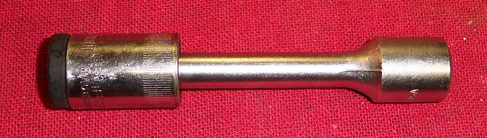
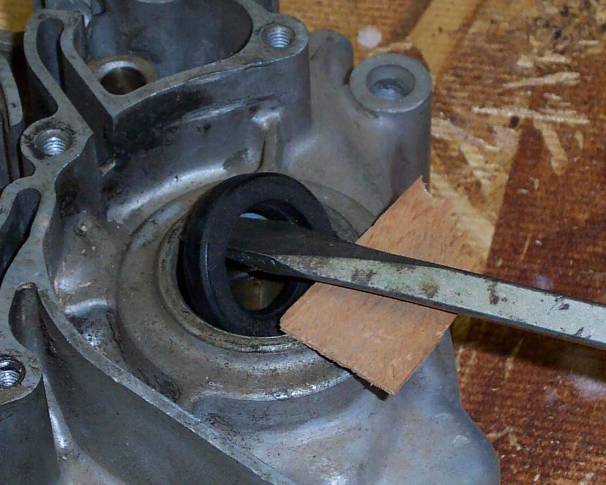
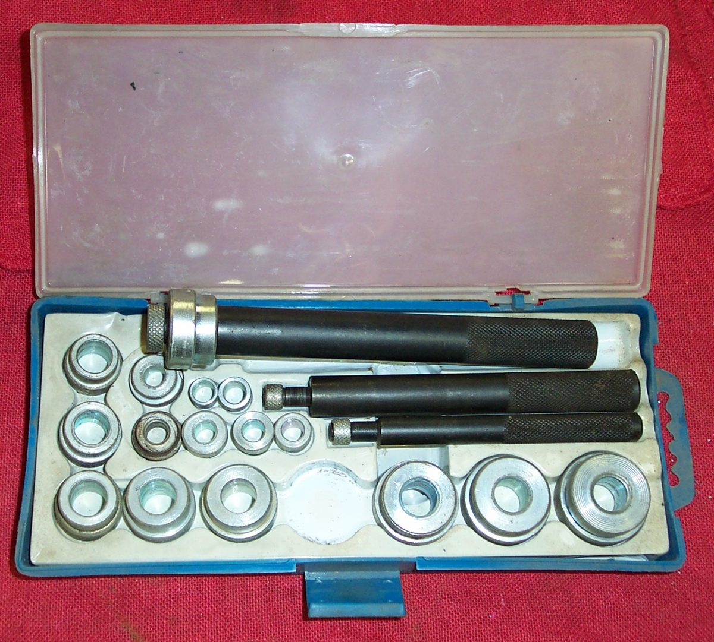
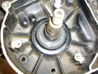

An oil seal keeps oil or grease inside while a shaft turns through the case. On a two-stroke it also keeps pressure and vacuum in the crankcase. A lip presses on the shaft, either by its own rubber or by a thin spring. The lip wears flat with time. A seal can look good outside but be worn out inside. When a seal leaks, replace it, and check the shaft and bearing next to it.
Safety
- Drain the oil if the seal is below the oil level, or work on the side that is not wet.
- Wear eye protection when levering and hammering.
- Do not pry against the sealing surface of the shaft or the case. A scratched shaft will leak again.
- Chain-drive sprocket seals: see Replace the output shaft seal for the full job.
You need
- A new seal with the same inner diameter, outer diameter and width as the old one. These three sizes are cast on the seal. Get it from the maker, or from a seal supplier in the same size.
- A way to pull the old seal: a seal puller, or a flat screwdriver with a piece of wood under it.
- A way to drive the new seal: a socket or a length of pipe that fits the outer rim of the seal.
- Fine emery paper, clean grease, and a thin sheet of plastic if the shaft is rough.
Steps
- Note which way the old seal faces: lip side to the oil, marked side out.
- Clean the dirt away from the seal and the shaft. Look at the shaft for a groove or rust where the lip ran.
- Pull the seal out. Most seals can be levered out with a screwdriver, with a piece of wood or metal under the screwdriver to protect the case. Another way is to drive it out from behind if the engine is apart. Some have a raised edge cast into the case, and on those the manual gives a different method.
- If the shaft has a light groove or rust, smooth it with very fine emery paper, working around the shaft. A deep groove needs a shaft repair sleeve or a new shaft.
- Clean the seat in the case. Remove any burr.
- Coat the outer edge of the new seal with a thin film of grease, and put a little clean grease on the lip. Use sealant on the outer edge only if the manual says so.
- Protect the lip as it passes over the shaft end. Wrap the shaft end with thin plastic or tape if it has a sharp edge or a thread.
- Fit the seal square, with the printed face out unless the manual says otherwise. Push it in with the socket or pipe that bears on the rim, not on the rubber. The rim of steel and rubber is strong. The centre is soft.
- Drive it in evenly until it is level with the case or at the depth given in the manual. If only a small punch fits, tap a little at one point, then at the point opposite, and work around.
- If the seal lip has folded back, free it with a thin blunt tool. If the garter spring is damaged but the rubber is fine, replace the spring from a scrap seal.
- If the old lip ran in a groove, try to seat the new lip just in front of or behind the groove if the design allows it.
- Refit the covers, sprocket or levers. Refill the oil if drained.
Check your work
- The seal sits square and level, with the lip not folded.
- No oil appears after a short run and a test ride.
- The shaft turns freely with no new drag.
If it did not fix the problem
- Leak stays: the shaft may be grooved, or the bearing next to the seal has play. See Rumbling or growling from inside the engine.
- Oil keeps dropping with no leak seen: Oil level drops but there is no visible leak.
- Leak at a cover: Oil leaking from an engine side cover.